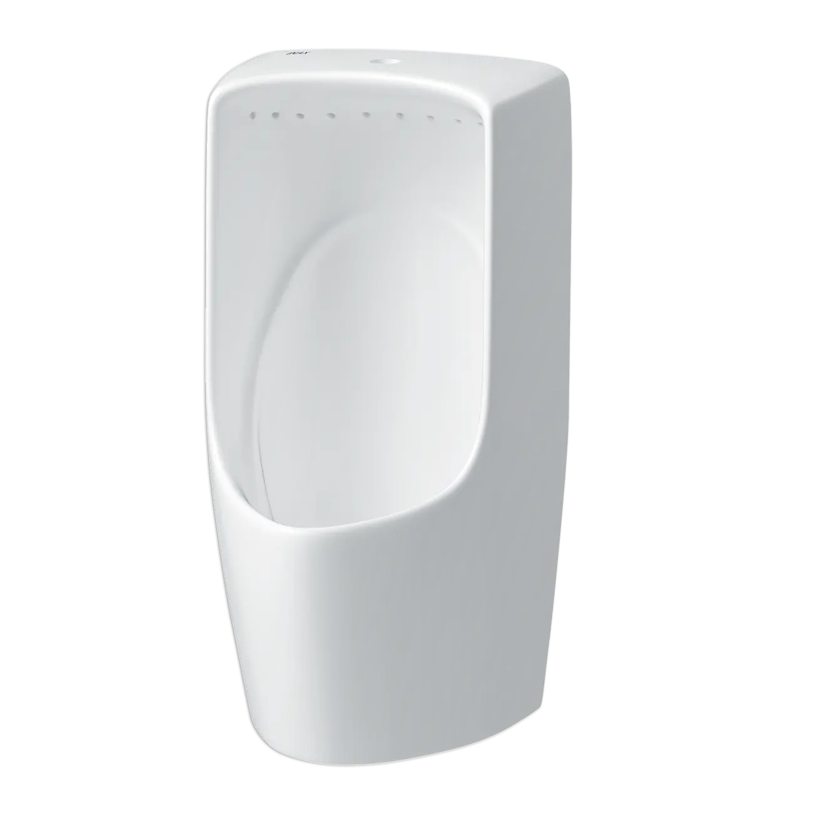
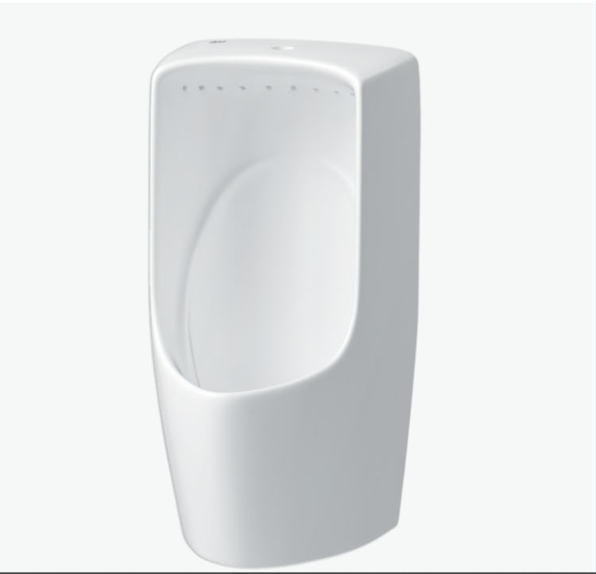
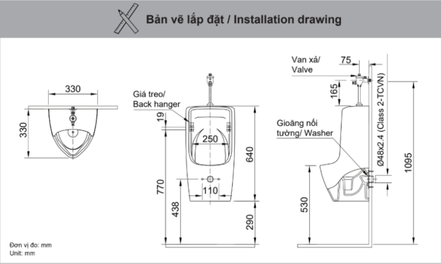

Bồn tiểu nam U-431 VR không chỉ là một thiết bị vệ sinh mà còn là giải pháp hoàn hảo để tối ưu hóa không gian, nâng cao tiêu chuẩn sạch sẽ và mang lại vẻ đẹp tinh tế cho phòng tắm. Được kế thừa công nghệ tiên tiến từ thương hiệu INAX hàng đầu Nhật Bản, U-431VR hứa hẹn mang đến một trải nghiệm sử dụng vượt trội, tiện lợi và bền vững.Bồn tiểu nam U-431VR có gì đặc biệt?Kiểu dáng treo tường giúp giải phóng hoàn toàn không gian sàn, tạo cảm giác phòng vệ sinh rộng rãi và thoáng đãng hơn, phù hợp với không gian có diện tích hạn chế hoặc các công trình công cộng nơi cần tối đa hóa sự tiện nghi và dễ dàng vệ sinh.Kích thước sản phẩm cân đối, hài hòa, phù hợp với mọi phong cách thiết kế, từ tối giản đến sang trọng với 330 (Sâu) x 330 (Rộng) x 640 (Cao) mm,. Thông số này không chỉ đảm bảo sự tiện lợi khi sử dụng mà còn tạo nên một tổng thể thẩm mỹ liền mạch và gọn gàng.Thiết kế treo tường còn mang lại vẻ đẹp hiện đại, tinh tế. Mọi đường nét được chăm chút tỉ mỉ, giúp sản phẩm trở thành một điểm nhấn thanh lịch trong không gian phòng tắm.Bồn tiểu nam U-431VR được chế tác từ chất liệu sứ cao cấp, được nung ở nhiệt độ tiêu chuẩn, mang lại độ bền vượt trội và khả năng chống trầy xước, va đập hiệu quả. Bề mặt sứ nhẵn mịn, sáng bóng, không chỉ dễ dàng vệ sinh mà còn giữ được vẻ đẹp như mới theo thời gian.Tính năng cốt lõi của U-431VR nằm ở công nghệ xả rửa bằng vành RIM. Khác với các kiểu xả truyền thống, vành RIM tạo ra một dòng nước xoáy đều, mạnh mẽ, cuốn trôi mọi chất bẩn trên toàn bộ bề mặt bên trong lòng bồn. Với công nghệ này, sản phẩm đảm bảo làm sạch hiệu quả, ngăn ngừa sự tích tụ của vi khuẩn, cặn bẩn và mùi hôi, giữ cho bồn tiểu luôn trong trạng thái vệ sinh tuyệt đối.Sản phẩm hoạt động hiệu quả trong dải áp lực nước cấp từ 0.1 - 0.5 MPa, một phạm vi phổ biến và tương thích với hầu hết các hệ thống cấp nước hiện nay.Để đảm bảo quá trình lắp đặt diễn ra thuận lợi và chính xác, INAX đã cung cấp đầy đủ phụ kiện cần thiết. Sản phẩm đã bao gồm gioăng nối tường UF-13AWP(VU), giúp người thi công không cần tốn thêm thời gian và chi phí để tìm kiếm phụ kiện tương thích. Sự đồng bộ này không chỉ tối ưu hóa quy trình lắp đặt mà còn đảm bảo hiệu quả hoạt động lâu dài của sản phẩm.Bản vẽ lắp đặt bồn tiểu nam U-431VRXem chi tiết cách lắp đặt tại file: HDLD AU-431VR U-341VR.pdfThông số kỹ thuậtChất liệuSứKiểu dángNối tườngKích thước330 x 330 x 640 mm (Sâu x Rộng x Cao)Đặc điểm- Bồn tiểu xả rửa bằng vành RIM - Áp lực nước cấp 0.1 - 0.5 MPaThương hiệuINAXKhác- Sản phẩm đã bao gồm gioăng nối tường UF-13AWP(VU) - Hotline tư vấn và bảo hành: 18006633
Bồn tiểu nam U-431VR
Bồn tiểu thương hiệu INAX.
Đã cập nhật danh sách yêu thích.
DANH MỤC: Bồn tiểu
MÃ SẢN PHẨM: U-431VR
DEPTH: 330mm
HEIGHT: 250mm
WIDTH: 640mm
Bồn tiểu nam U-431 VR không chỉ là một thiết bị vệ sinh mà còn là giải pháp hoàn hảo để tối ưu hóa không gian, nâng cao tiêu chuẩn sạch sẽ và mang lại vẻ đẹp tinh tế cho phòng tắm. Được kế thừa công nghệ tiên tiến từ thương hiệu INAX hàng đầu Nhật Bản, U-431VR hứa hẹn mang đến một trải nghiệm sử dụng vượt trội, tiện lợi và bền vững.Bồn tiểu nam U-431VR có gì đặc biệt?Kiểu dáng treo tường giúp giải phóng hoàn toàn không gian sàn, tạo cảm giác phòng vệ sinh rộng rãi và thoáng đãng hơn, phù hợp với không gian có diện tích hạn chế hoặc các công trình công cộng nơi cần tối đa hóa sự tiện nghi và dễ dàng vệ sinh.Kích thước sản phẩm cân đối, hài hòa, phù hợp với mọi phong cách thiết kế, từ tối giản đến sang trọng với 330 (Sâu) x 330 (Rộng) x 640 (Cao) mm,. Thông số này không chỉ đảm bảo sự tiện lợi khi sử dụng mà còn tạo nên một tổng thể thẩm mỹ liền mạch và gọn gàng.Thiết kế treo tường còn mang lại vẻ đẹp hiện đại, tinh tế. Mọi đường nét được chăm chút tỉ mỉ, giúp sản phẩm trở thành một điểm nhấn thanh lịch trong không gian phòng tắm.Bồn tiểu nam U-431VR được chế tác từ chất liệu sứ cao cấp, được nung ở nhiệt độ tiêu chuẩn, mang lại độ bền vượt trội và khả năng chống trầy xước, va đập hiệu quả. Bề mặt sứ nhẵn mịn, sáng bóng, không chỉ dễ dàng vệ sinh mà còn giữ được vẻ đẹp như mới theo thời gian.Tính năng cốt lõi của U-431VR nằm ở công nghệ xả rửa bằng vành RIM. Khác với các kiểu xả truyền thống, vành RIM tạo ra một dòng nước xoáy đều, mạnh mẽ, cuốn trôi mọi chất bẩn trên toàn bộ bề mặt bên trong lòng bồn. Với công nghệ này, sản phẩm đảm bảo làm sạch hiệu quả, ngăn ngừa sự tích tụ của vi khuẩn, cặn bẩn và mùi hôi, giữ cho bồn tiểu luôn trong trạng thái vệ sinh tuyệt đối.Sản phẩm hoạt động hiệu quả trong dải áp lực nước cấp từ 0.1 - 0.5 MPa, một phạm vi phổ biến và tương thích với hầu hết các hệ thống cấp nước hiện nay.Để đảm bảo quá trình lắp đặt diễn ra thuận lợi và chính xác, INAX đã cung cấp đầy đủ phụ kiện cần thiết. Sản phẩm đã bao gồm gioăng nối tường UF-13AWP(VU), giúp người thi công không cần tốn thêm thời gian và chi phí để tìm kiếm phụ kiện tương thích. Sự đồng bộ này không chỉ tối ưu hóa quy trình lắp đặt mà còn đảm bảo hiệu quả hoạt động lâu dài của sản phẩm.Bản vẽ lắp đặt bồn tiểu nam U-431VRXem chi tiết cách lắp đặt tại file: HDLD AU-431VR U-341VR.pdfThông số kỹ thuậtChất liệuSứKiểu dángNối tườngKích thước330 x 330 x 640 mm (Sâu x Rộng x Cao)Đặc điểm- Bồn tiểu xả rửa bằng vành RIM - Áp lực nước cấp 0.1 - 0.5 MPaThương hiệuINAXKhác- Sản phẩm đã bao gồm gioăng nối tường UF-13AWP(VU) - Hotline tư vấn và bảo hành: 18006633
DANH MỤC: Bồn tiểu
MÃ SẢN PHẨM: U-431VR
DEPTH: 330mm
HEIGHT: 250mm
WIDTH: 640mm